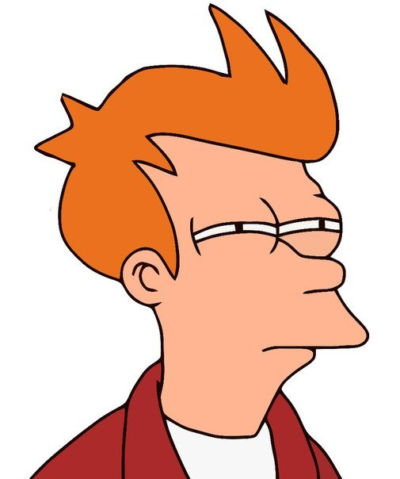

Путь программиста:
Стадии развития

Стадии
- Чо за фигня!?
- Ааа, вот оно что…
- Кажется я программист!
- Мания величия.
- Не так уж я и крут…
- To be continued
Стадия номер раз: Чо за фигня!?
- Стадия — убийца программистов!
- Примеры из книжки не работают, этот оператор нигде не описан. Какие мануалы!? Что такое мануалы!? Зачем их курить!? Что это!? Седой волос!? Откуда у меня седой волос!?
Стадия номер два: Ааа, вот оно что…
- Cтадия поиска стиля, и обретения мастерства
- Что бы пройти этот этап, нужны не столько мозги (хотя куда ж без них) сколько усидчивость, и изучение нюансов языка программирования.
Стадия номер три: Кажется я программист!

Стадия номер три: Кажется я программист!
- Эта стадия начинается следующим образом: «А не написать ли мне…»
- ООП? Зачем он? Все твердят про это ООП, я и без него обходился! А еще эти БД! Отношения, связи, ключи… Чот мне разонравилось программирование!!!
Стадия номер четыре: Мания величия.
- Самая опасная и самая долгая стадия!
- Программист забивает на новые технологии
- Надо понять, что программирование – это такая вещь, постичь которую полностью – невозможно!
Стадия номер пять: Не так уж я и крут…
Стадия номер пять: Не так уж я и крут…
- На этой стадии программист переосмысляет само понятия «программирование»
- Внимание уделяется на готовые решения, а не на изобретение велосипеда по-новой
- На первый план выходят скорость и качества реализации проекта